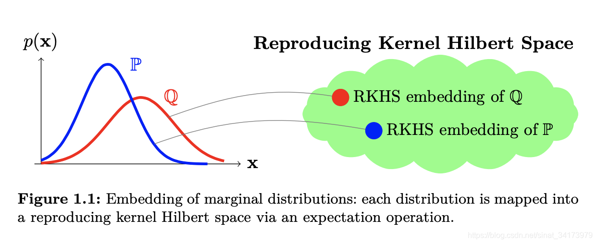

Maximum Mean Discrepancy
启发与定义
Maximum Mean Discrepancy (MMD) 是一个衡量两个分布差异的指标。具体而言，设 \(p,q\) 是 \(\mathcal X\) 上的概率分布，给定从 \(p\) 采样出的独立同分布样本 \(X=\{x_1,\ldots,x_m\}\) 以及从 \(q\) 采样出的独立同分布样本 \(Y=\{y_1,\ldots,y_n\}\)，我们如何判断二者是否采样自同一个分布？（即询问 \(p\) 是否等于 \(q\) ？）
MMD 启发自如下定理。
定理 1：设 \((\mathcal X,d)\) 是一个可分的度量空间，\(p,q\) 是 \(\mathcal X\) 上的两个 Borel 概率测度，则： \[ p=q\iff\mathbb E_p[f(x)]=\mathbb E_q[f(x)],\;\forall f\in C(\mathcal X) \] 其中 \(C(\mathcal X)\) 表示 \(\mathcal X\) 上所有连续有界函数。
基于上述定理，当 \(p=q\) 时总有 \(\mathbb E_{p}[f(x)]-\mathbb E_{q}[f(x)]=0\)，因此用这个差值作为衡量指标似乎是一个不错的选择。不过这个差值还依赖于 \(f\) 的选取，因此一个自然的想法是选择使得差值最大的那个 \(f\). 于是，我们得到了 MMD 的定义。
定义 (MMD)：设 \(\mathcal F\) 是 \(\mathcal X\) 上某些函数的集合，\(p,q,X,Y\) 如上文所定义。定义 MMD 为： \[ \text{MMD}[\mathcal F,p,q]\mathrel{\mathrel{\vcenter{:}}=}\sup_{f\in\mathcal F}\Big(\mathbb E_{p}[f(x)]-\mathbb E_{q}[f(x)]\Big) \] 当取 \(\mathcal F=C(\mathcal X)\) 时我们就得到了定理 1 的情形。
引入 RKHS
在实际求解中，\(C(\mathcal X)\) 的范围太大了，需要将其限制在一个更小的范围。为此，MMD 作者将 \(\mathcal F\) 限制为 universal RKHS 中的单位球。简要回顾一下，一个 RKHS \(\mathcal H\) 是 \(\mathcal X\) 上的函数构成的希尔伯特空间 \(\mathcal H=\{f\mid f:\mathcal X\to\mathbb R\}\)，并且唯一对应一个再生核 \(k:\mathcal X\times \mathcal X\to\mathbb R\)，满足 \(k(\cdot,x)\in\mathcal H\) 且具有再生性质 \(\langle f,k(\cdot,x)\rangle_\mathcal H=f(x)\).
若加入 \(\mathcal X\) 是紧的这一条件，那么下面的定理表明限制 \(\mathcal F\) 为 universal RKHS 中的单位球是可行的。
定理 2：设 \(\mathcal X\) 是一个紧的度量空间，\(\mathcal H\) 是 \(\mathcal X\) 上的 universal RKHS，相应的再生核为 \(k(\cdot,\cdot)\). 设 \(\mathcal F\) 为 \(\mathcal H\) 中的单位球，则： \[ p=q\iff\text{MMD}[\mathcal F,p,q]=0 \] 选择 RKHS 的好处在于，利用再生核的再生性质，我们能很方便地计算 MMD. 具体而言，设 \(\phi(x)=k(\cdot,x)\in\mathcal H\)，则根据再生性质有 \(f(x)=\langle f,\phi(x)\rangle_\mathcal H\)，因此 MMD 可以写作： \[ \begin{align} \text{MMD}[\mathcal F,p,q]&=\sup_{\Vert f\Vert_\mathcal H\leq 1}\Big(\mathbb E_{p}[f(x)]-\mathbb E_{q}[f(x)]\Big)\\ &=\sup_{\Vert f\Vert_\mathcal H\leq 1}\Big(\mathbb E_{p}\langle f,\phi(x)\rangle_{\mathcal H}-\mathbb E_{q}\langle f,\phi(x)\rangle_{\mathcal H}\Big)\\ &=\sup_{\Vert f\Vert_\mathcal H\leq 1}\Big(\langle f,\mathbb E_{p}[\phi(x)]\rangle_{\mathcal H}-\langle f,\mathbb E_{q}[\phi(x)]\rangle_{\mathcal H}\Big)\\ &=\sup_{\Vert f\Vert_\mathcal H\leq 1}\big\langle f,\mathbb E_{p}[\phi(x)]-\mathbb E_{q}[\phi(x)]\big\rangle_{\mathcal H}\\ &=\big\Vert\mathbb E_{p}[\phi(x)]-\mathbb E_{q}[\phi(x)]\big\Vert_{\mathcal H} \end{align} \] 其中 \(\mathbb E_{p}[\phi(x)]\in\mathcal H\) 称作分布 \(p\) 的核均值嵌入 (kernel mean embedding). 可以看见，MMD 本质上就是 RKHS 中，分布 \(p\) 的核均值嵌入和分布 \(q\) 的核均值嵌入之间的距离，如下图所示。

经验估计
使用样本近似期望，得到 MMD 的经验估计： \[ \text{MMD}[\mathcal F,X,Y]=\left\Vert\frac{1}{m}\sum_{i=1}^m\phi(x_i)-\frac{1}{n}\sum_{i=1}^n\phi(y_i)\right\Vert_{\mathcal H} \]
值得注意的是这个估计其实是有偏的。为继续化简，取平方得： \[ \begin{align} \text{MMD}^2[\mathcal F,X,Y]&=\left\Vert\frac{1}{m}\sum_{i=1}^m\phi(x_i)-\frac{1}{n}\sum_{i=1}^n\phi(y_i)\right\Vert_{\mathcal H}^2\\ &=\frac{1}{m^2}\sum_{i=1}^{m}\sum_{j=1}^m\langle\phi(x_i),\phi(x_j)\rangle-\frac{2}{mn}\sum_{i=1}^m\sum_{j=1}^n\langle\phi(x_i),\phi(y_j)\rangle+\frac{1}{n^2}\sum_{i=1}^{n}\sum_{j=1}^n\langle\phi(y_i),\phi(y_j)\rangle\\ &=\frac{1}{m^2}\sum_{i=1}^{m}\sum_{j=1}^mk(x_i,x_j)-\frac{2}{mn}\sum_{i=1}^m\sum_{j=1}^nk(x_i,y_j)+\frac{1}{n^2}\sum_{i=1}^{n}\sum_{j=1}^nk(y_i,y_j) \end{align} \]
因此： \[ \text{MMD}[\mathcal F,X,Y]=\left[\frac{1}{m^2}\sum_{i=1}^{m}\sum_{j=1}^mk(x_i,x_j)-\frac{2}{mn}\sum_{i=1}^m\sum_{j=1}^nk(x_i,y_j)+\frac{1}{n^2}\sum_{i=1}^{n}\sum_{j=1}^nk(y_i,y_j)\right]^{\frac{1}{2}} \] 这就是我们在实际应用中使用的 MMD 计算公式，其中再生核一般取高斯核或者拉普拉斯核。
参考资料
- Gretton, Arthur, Karsten Borgwardt, Malte Rasch, Bernhard Schölkopf, and Alex Smola. A kernel method for the two-sample-problem. Advances in neural information processing systems 19 (2006). ↩︎
- Gretton, Arthur, Karsten M. Borgwardt, Malte J. Rasch, Bernhard Schölkopf, and Alexander Smola. A kernel two-sample test. The Journal of Machine Learning Research 13, no. 1 (2012): 723-773. ↩︎